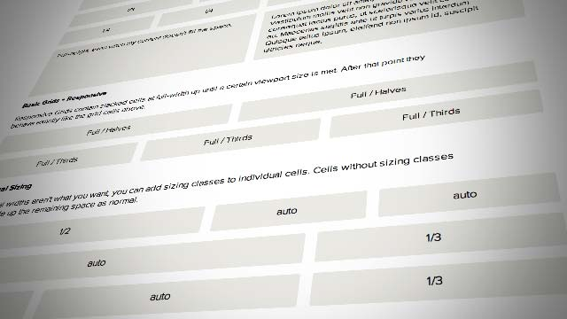
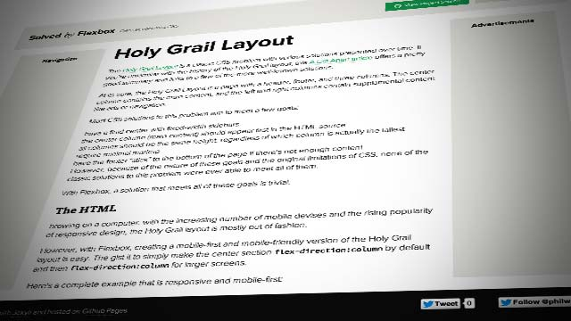
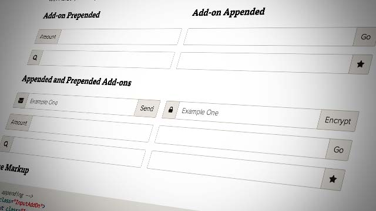
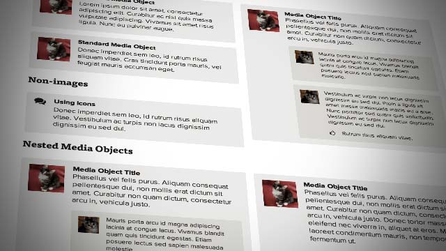
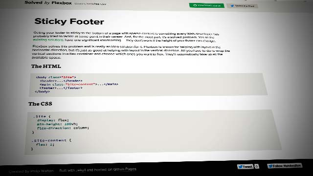
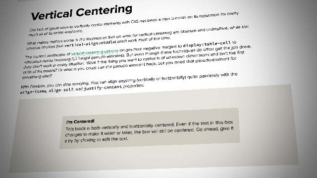

CSS has been lacking proper layout mechanisms for far too long. Transitions, animations, filters, all of these are great and useful additions to the language, but they don't address the major problems that Web developers have been complaining about for what seems like an eternity.
This site is not another CSS framework. Instead, its purpose is to showcase problems once hard or impossible to solve with CSS alone, now made trivially easy with Flexbox. And with the recent release of Internet Explorer 11 and Safari 6.1, the latest Flexbox spec is now supported in every modern browser.
Check out the demos below. View the styles in the Web inspector or dive into the source to see just how easy CSS layout will become once Flexbox becomes mainstream.
Showcase

Better, Simpler Grid Systems
Flexbox gives us most of the features we want from a grid system out of the box. And sizing and alignment are just one or two properties away.

Holy Grail Layout
This classic problem has been challenging CSS hackers for years, yet none of the historical solutions have fully solved it. With Flexbox, it's finally possible.

Input Add-ons
Creating full-width, fluid input/button pairs has been impossible for most of the history of CSS. With Flexbox it couldn't be easier.

Media Object
Create media objects with fixed or varying figure sizes without worrying about overflow, clearfixing, or block formatting context hacks.

Sticky Footer
Getting your footer to stick to the bottom of sparsely contented pages has always been tricky. And if the footer's height is unknown, it's basically impossible. Not so anymore.

Vertical Centering
This classic problem has been challenging CSS hackers for years, yet none of the historical solutions have fully solved it. With Flexbox, it's finally possible.
Browser Support
Chrome 21+
Opera 12.1+
Firefox 22+
Safari 6.1+
IE 10+
Edge All
Caveats and Known Issues
IE 10 has Flexbox support but for a draft version of the current spec: (display:flexbox).
Safari 6 and earlier support the original Flexbox syntax, which is now obsolete: (display:box).
Firefox 27 and earlier do not support multi-line flexboxes. See this bug for more details.
All of the code samples on this site show how to solve a particular design problem with Flexbox. They show just the code that's needed to make the demos work in a spec-compliant browser. Some browsers do not fully comply with the latest version of the spec, so sadly, a few workarounds were necessary.
Workarounds for non-compliant browsers are not shown in the code samples, but if you're curious about those implementation details, you can check out the source files. Each demo links to its source, and all browser-specific workarounds are well-documented, so don't be afraid to take a look.
The vendor prefixing and translating of current flex properties to their legacy equivalents is all handled by autoprefixer. If you're writing Flexbox code and not using autoprefixer, well, you're making a horrible mistake.
The class naming convention used in the code samples and source files is taken from SUIT CSS, which is based on BEM methodologies. Each example includes one or more reusable CSS components allowing you to adapt or copy these patterns in to your own projects. Links are provided to their respective components on each example page.
If you find a mistake or would like to suggest an additional example, feel free to open an issue or submit a pull request on Github.
Translations
The following translations have been graciously provided by the community:
Please note that translations are unofficial and may be inaccurate or out of date. To submit your own translation, please submit a pull request or open an issue on Github and link to your translated content.